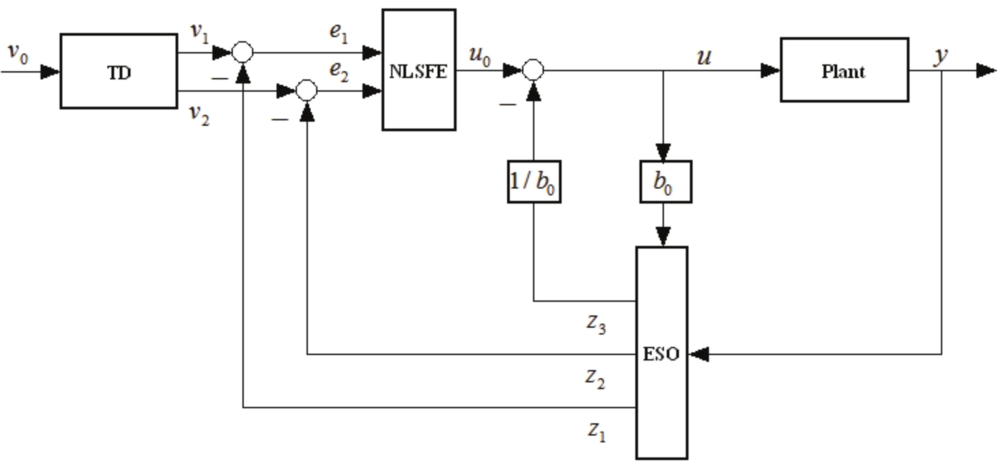

ADRC自抗扰控制器
Table of Contents

为了解决快速性和超调的矛盾，在控制器设计过程中引入了过渡过程，通俗的讲就是输入信号从初始值到目标值并不是阶跃的，而是平滑过渡的，并且这个过渡过程的时间长短是可以调节的。将过渡过程和微分器在一个模块中实现，称为跟踪-微分器(TD)，单独的过渡过程和速度规划并没有本质区别。但是TD和速度规划不是一回事，TD将输入过渡和微分器统一为一个模块，它一边尽可能快地跟踪输入信号，同时给出输入信号近似的微分。
自抗扰控制对扰动和不确定性的处理是自抗扰控制最突出的特征，它把作用于被控对象的所有不确定因素都归结为“未知扰动”，而用被控对象的输入输出数据对它进行估计，并给予补偿。“自抗扰”的名称也来源于此，即主动抵抗干扰，不需要直接测量外扰的作用，也不需要实现知道扰动的规律（能知道更好）。构建观测器，利用被控对象的输入、输出和所施加的控制输入来估计作用于系统的总扰动（包括内扰和外扰，可以粗浅地理解为所有的影响因素），实现这一功能的模块被称为扩展状态观测器（Extended State Observer，ESO）。这个名字也与观测器的形式十分匹配，因为在设计ESO时，首先构造一个扩张的系统，此系统的阶数比被控对象的阶数高一阶，ESO就是估计扩张系统的状态。观测出系统的总扰动，在设计控制器时首先抵消掉这个扰动，将得到一个标准的串联积分型系统，基于此标准型系统设计控制器时，控制器的形式与PID的形式类型，一般利用误差和误差的微分来构造控制器，这里的误差及其微分是由TD的输出和ESO的输出构造的。韩老师在其专著中给出了常用的几种非线性状态误差反馈控制律（Nonlinear State Error Feedback，NLSEF）。
以下的所有形式都是连续型的形式，对于使用离散化的控制，就需要将其离散化
也比较简单：根据导数来计算
也比较简单：根据导数来计算 $x_{k+1}= T * \frac{dx_k}{dt} + x_k$
主要模块
- 跟踪-微分器 TD
- 扩张状态观测器 ESO
- 状态误差反馈规律 SEF
LADRC 线性ADRC
被控对象可以有时延，可以有右半平面的零点或极点，但不能在右半平面同时有零点和极点。同时有右半平面的零点和极点，意味着有根轨迹从右半平面出发有回到右半平面，可能一直在右半平面，这样控制器设计是十分困难的。
被控对象的型次要求：对象不含微分器，且型次要求允许控制器含一个积分器。LADRC本身含一个积分器，如果被控对象含微分器，会出现原点的零极点对消。允许控制器含一个积分器是因为LADRC中是一定含有一个积分器的。
一阶LADRC
-
LTD
是由一阶低通滤波器 $\frac{r}{s + r}$ 推导出来的，只需要更改 $r$ 值， $r$ 值越大到达设定值 $v$ 的时间就越短
令
$$ X=\begin{bmatrix}x_1\end{bmatrix}\\x_1=y $$从上式的低通滤波的传递函数可以推导出系统的状态方程
$$ \dot{X}=AX+Bu=\begin{bmatrix}-r\end{bmatrix}X+[r]u\\Y=[1]X+[0]u $$输出，这里的 u 表示输入的期望值，LTD 是对期望值进行处理的
$$ x_1(k+1)=h\dot{x_1}(k)+x_1(k) =h(-rx_1(k) + ru)+x_1(k) $$ -
LESO
从上述LTD中可知，这一步实际上是把扰动合并，将输入输出噪声与模型上的误差合并，从而得到下列式子。其中 $f$ 是总扰动
$$ y'=f(x_1)+bu= f(x_1) + b_0u - b_0u + bu=f+b_0u $$在一阶的 ADRC 中，LESO 是二阶的，具体形式为
令
$$ Z=\begin{bmatrix}z_1\\z_2\end{bmatrix} $$并且
$$ z_1\rightarrow x_1=y\\z_2\rightarrow f~扰动 $$得
$$ \dot{Z}=AZ+Bu+L(x_1-z_1)\\\hat{y}=CZ $$其中
$$ L=\begin{bmatrix}\beta_1\\\beta_2\\\beta_3\end{bmatrix} $$带入
$$ \left\{\begin{aligned}\left.\begin{bmatrix}\dot{z_1}\\\dot{z_2}\end{bmatrix}\right.&=&\left.\begin{bmatrix}-\beta_1&1\\-\beta_2&0\end{bmatrix}\right.\left.\begin{bmatrix}z_1\\z_2\end{bmatrix}\right.+\left.\begin{bmatrix}b_0&\beta_1\\0&\beta_2\end{bmatrix}\right.\left.\begin{bmatrix}u\\y\end{bmatrix}\right.\\\hat{y}&=&\left.\begin{bmatrix}1&0\\0&1\end{bmatrix}\right.\left.\begin{bmatrix}z_1\\z_2\end{bmatrix}\right.\end{aligned}\right. $$其中 $\beta$ 存在于特征方程中，如下
$$ L_{ESO}(s)=s^{n+1}+\beta_1 s^n + \beta_2 s^{n-1}+…+\beta_{n-1} $$将极点都配置到左半轴同一位置，可以将调节参数缩减为
$$ L_{ESO}(s)=(s+w_o)^{n+1}=0 $$其中 $w_o$ 表示扩张观测器的带宽，而 $\beta$ 对应着相应的系数
输入为 $u, y$
输出为
$$ z_1(k+1)=z_1(k)+h\dot{z_1}(k)=z_1(k)+h(-\beta_1z_1(k)+z_2(k)+b_0u+\beta_1y)\\z_2(k+1)=z_2(k)+h\dot{z_2}(k)=z_2(k)+h(-\beta_2z_1(k)+\beta_2y) $$ -
LSEF
令
$$ e_1 = x_1 - z_1\\u_0 = a_1 \times e_1\\u=\frac{u_0-z_2}{b_0} $$其中 $a_1$ 存在于 SEF 特征方程中
$$ L_{SEF}(s)=s^n+a_ns^{n-1}+…+a_2s+a_1 $$将特征值统一配置在左半实轴同一位置，得到
$$ L_{SEF}(s)=(s+w_c)^{n} $$其中 $w_c$ 是 LSEF 的带宽
二阶LADRC
-
LTD
二阶LTD是由二阶低通滤波器传递函数 $\frac{r^2}{s^2+2rs+r^2}$ 得来的，只需要更改 $r$ 值， $r$ 值越大到达设定值 $v$ 的时间就越短
令
$$ X=\begin{bmatrix}x_1\\x_2\end{bmatrix}\\ \left\{\begin{aligned}x_1 = y\\x_2=\dot{x_1}\end{aligned}\right. $$从上式的低通滤波的传递函数可以推导出系统的状态方程
$$ \dot{X}=AX+Bu=\begin{bmatrix}0&1\\-r^2&-2r\end{bmatrix}X+\begin{bmatrix}0\\r^2\end{bmatrix}u\\Y=\begin{bmatrix}1\\0\end{bmatrix}X+[0]u $$输出，这里的 u 表示输入的期望值，LTD 是对期望值进行处理的
$$ x_1(k+1)=hx_2(k)+x_1(k)\\x_2(k+1) =h(-r^2 x_1(k) - 2rx_2(k)+r^2 u)+x_2(k) $$ -
LESO
从上述LTD中可知，这一步实际上是把扰动合并，将输入输出噪声与模型上的误差合并，从而得到下列式子。其中 $f$ 是总扰动
$$ y''=f(x_1)+bu= f(x_1) + b_0u - b_0u + bu=f+b_0u $$在一阶的 ADRC 中，LESO 是二阶的，具体形式为
令
$$ Z=\begin{bmatrix}z_1\\z_2\\z_3\end{bmatrix} $$并且
$$ z_1\rightarrow x_1=y\\z_2\rightarrow x_2=\dot{y}\\z_3\rightarrow f~扰动 $$得
$$ \dot{Z}=AZ+Bu+L(x_1-z_1)\\\hat{y}=CZ $$其中
$$ L=\begin{bmatrix}\beta_1\\\beta_2\\\beta_3\end{bmatrix} $$带入得
$$ \left\{\begin{aligned}\left.\begin{bmatrix}\dot{z_1}\\\dot{z_2}\\\dot{z_3}\end{bmatrix}\right.&=&\left.\begin{bmatrix}-\beta_1&1&0\\-\beta_2&0&1\\-\beta_3&0&0\end{bmatrix}\right.\left.\begin{bmatrix}z_1\\z_2\\z_3\end{bmatrix}\right.+\left.\begin{bmatrix}0&\beta_1\\b_0&\beta_2\\0&\beta_3\end{bmatrix}\right.\left.\begin{bmatrix}u\\y\end{bmatrix}\right.\\\hat{y}&=&\left.\begin{bmatrix}1&0&0\\0&1&0\\0&0&1\end{bmatrix}\right.\left.\begin{bmatrix}z_1\\z_2\\z_3\end{bmatrix}\right.\end{aligned}\right. $$其中 $\beta$ 存在于特征方程中，如下
$$ L_{ESO}(s)=s^{n+1}+\beta_1 s^n + \beta_2 s^{n-1}+…+\beta_{n-1} $$将极点都配置到左半轴同一位置，可以将调节参数缩减为
$$ L_{ESO}(s)=(s+w_o)^{n+1}=0 $$其中 $w_o$ 表示扩张观测器的带宽，而 $\beta$ 对应着相应的系数
输入为 $u, y$
输出为
$$ z_1(k+1)=z_1(k)+h\dot{z_1}(k)=z_1(k)+h(-\beta_1z_1(k)+z_2(k)+\beta_1y)\\z_2(k+1)=z_2(k)+h\dot{z_2}(k)=z_2(k)+h(-\beta_2z_1(k)+z_3(k)+b_0u+\beta_2y)\\z_3(k+1)=z_3(k)+h\dot{z_3}(k)=z_3(k)+h(-\beta_3z_1(k)+\beta_3y) $$ -
LSEF
令
$$ e_1 = x_1 - z_1\\e_2=x_2-z_2\\u_0 = a_1 e_1+a_2e_2\\u=\frac{u_0-z_3}{b_0} $$其中 $a_1$ 存在于 SEF 特征方程中
$$ L_{SEF}(s)=s^n+a_ns^{n-1}+…+a_2s+a_1 $$将特征值统一配置在左半实轴同一位置，得到
$$ L_{SEF}(s)=(s+w_c)^{n} $$其中 $w_c$ 是 LSEF 的带宽
三阶LADRC
-
LTD
三阶 LTD 是由三阶低通滤波传递函数 $\frac{r^3}{s^3+3rs^2+3r^2s+r^3}$得来的
令
$$ X=\begin{bmatrix}x_1\\x_2\\x_3\end{bmatrix}\\\left\{\begin{aligned}x_1 = y\\x_2=\dot{x_1}\\x_3=\dot{x_2} \end{aligned}\right. $$得
$$ \dot{X}=\begin{bmatrix}0&1&0\\0&0&1\\-r^3&-3r^2&-3r\end{bmatrix}X+\begin{bmatrix}0\\0\\r^3\end{bmatrix}u\\y=\begin{bmatrix}1\\0\\0\end{bmatrix}X+\begin{bmatrix}0\end{bmatrix}u $$输出，这里的 u 表示输入的期望值，LTD 是对期望值进行处理的
$$ x_1(k+1)=hx_2(k)+x_1(k)\\x_2(k+1) =hx_3(k)+x_2(k)\\x_3(k+1) =h(-r^3 x_1(k) - 3r^2x_2(k) -3rx_3(k)+r^3 u)+x_3(k) $$ -
LESO
由上式可以得出
$$ y^{'''}=f(x_1, x_2, x_3) + bu\\=f+b_0u $$此时引入 $z$ 跟踪量
$$ \left\{\begin{aligned}z_1\rightarrow x_1\\z_2\rightarrow x_2\\z_3\rightarrow x_3\\z_4\rightarrow f\end{aligned}\right.\\Z=\begin{bmatrix}z_1\\z_2\\z_3\\z_4\end{bmatrix} $$可得
$$ \dot{Z}=\begin{bmatrix}0&1&0&0\\0&0&1&0\\0&0&0&1\\0&0&0&0\end{bmatrix}Z+\begin{bmatrix}0\\0\\b_0\\0\end{bmatrix}u+L(x_1-z_1)\\\hat{y}=CZ+Du $$其中
$$ L=\begin{bmatrix}\beta_1\\\beta_2\\\beta_3\\\beta_4\end{bmatrix} $$带入得
$$ \dot{Z}=\begin{bmatrix}-\beta_1&1&0&0\\-\beta_2&0&1&0\\-\beta_3&0&0&1\\-\beta_4&0&0&0\end{bmatrix}Z+\begin{bmatrix}0&\beta_1\\0&\beta_2\\b_0&\beta_3\\0&\beta_4\end{bmatrix}\begin{bmatrix}u\\y\end{bmatrix}\\\hat{y}=CZ+Du=\begin{bmatrix}1&0&0&0\end{bmatrix}\begin{bmatrix}z_1\\z_2\\z_3\\z_4\end{bmatrix} $$其中 $\beta$ 存在于特征方程中，如下
$$ L_{ESO}(s)=s^{n+1}+\beta_1 s^n + \beta_2 s^{n-1}+…+\beta_{n-1} $$将极点都配置到左半轴同一位置，可以将调节参数缩减为
$$ L_{ESO}(s)=(s+w_o)^{n+1}=0 $$其中 $w_o$ 表示扩张观测器的带宽，而 $\beta$ 对应着相应的系数
输入为 $u, y$
输出为
$$ z_1(k+1)=z_1(k)+h\dot{z_1}(k)=z_1(k)+h(-\beta_1z_1(k)+z_2(k)+\beta_1y)\\z_2(k+1)=z_2(k)+h\dot{z_2}(k)=z_2(k)+h(-\beta_2z_1(k)+z_3(k)+\beta_2y)\\z_3(k+1)=z_3(k)+h\dot{z_3}(k)=z_3(k)+h(-\beta_3z_1(k)+z_4(k)+b_0u+\beta_3y)\\z_4(k+1)=z_4(k)+h\dot{z_4}(k)=z_4(k)+h(-\beta_4z_1(k)+\beta_4y) $$ -
LSEF
令
$$ e_1 = x_1 - z_1\\e_2=x_2-z_2\\e_3=x_3-z_3\\u_0 = a_1 e_1+a_2e_2+a_3e_3\\u=\frac{u_0-z_4}{b_0} $$其中 $a_1$ 存在于 SEF 特征方程中
$$ L_{SEF}(s)=s^n+a_ns^{n-1}+…+a_2s+a_1 $$将特征值统一配置在左半实轴同一位置，得到
$$ L_{SEF}(s)=(s+w_c)^{n} $$其中 $w_c$ 是 LSEF 的带宽
四阶LADRC
-
LTD
四阶 LTD 是由三阶低通滤波传递函数 $\frac{r^4}{s^4+4rs^3+6r^2s^2+4r^3s+r^4}$得来的
令
$$ X=\begin{bmatrix}x_1\\x_2\\x_3\\x_4\end{bmatrix}\\\left\{\begin{aligned}x_1 = y\\x_2=\dot{x_1}\\x_3=\dot{x_2}\\x_4 = \dot{x_3}\end{aligned}\right. $$得
$$ \dot{X}=\begin{bmatrix}0&1&0&0\\0&0&1&0\\0&0&0&1\\-r^4&-4r^3&-6r^2&-4r\end{bmatrix}X+\begin{bmatrix}0\\0\\0\\r^4\end{bmatrix}u\\y=\begin{bmatrix}1\\0\\0\\0\end{bmatrix}X+\begin{bmatrix}0\end{bmatrix}u $$输出，这里的 u 表示输入的期望值，LTD 是对期望值进行处理的
$$ x_1(k+1)=hx_2(k)+x_1(k)\\x_2(k+1) =hx_3(k)+x_2(k)\\x_3(k+1) =hx_4(k)+x_3(k)\\x_4(k+1) =h(-r^4 x_1(k) - 4r^3x_2(k) -6r^2x_3(k)-4rx_4(k)+r^4 u)+x_4(k) $$ -
LESO
由上式可以得出
$$ y^{''''}=f(x_1, x_2, x_3, x_4) + bu\\=f+b_0u $$此时引入 $z$ 跟踪量，相当于是一个预测量
$$ \left\{\begin{aligned}z_1\rightarrow x_1\\z_2\rightarrow x_2\\z_3\rightarrow x_3\\z_4\rightarrow x_4\\z_5\rightarrow f\end{aligned}\right.\\Z=\begin{bmatrix}z_1\\z_2\\z_3\\z_4\\z_5\end{bmatrix} $$可得
$$ \dot{Z}=\begin{bmatrix}0&1&0&0&0\\0&0&1&0&0\\0&0&0&1&0\\0&0&0&0&1\\0&0&0&0&0\end{bmatrix}Z+\begin{bmatrix}0\\0\\0\\b_0\\0\end{bmatrix}u+L(x_1-z_1)\\\hat{y}=CZ+Du $$其中
$$ L=\begin{bmatrix}\beta_1\\\beta_2\\\beta_3\\\beta_4\\\beta_5\end{bmatrix} $$带入得
$$ \dot{Z}=\begin{bmatrix}-\beta_1&1&0&0&0\\-\beta_2&0&1&0&0\\-\beta_3&0&0&1&0\\-\beta_4&0&0&0&1\\-\beta_5&0&0&0&0 \end{bmatrix}Z+\begin{bmatrix}0&\beta_1\\0&\beta_2\\0&\beta_3\\b_0&\beta_4\\0&\beta_5\end{bmatrix}\begin{bmatrix}u\\y\end{bmatrix}\\\hat{y}=CZ+Du=\begin{bmatrix}1&0&0&0&0\end{bmatrix}\begin{bmatrix}z_1\\z_2\\z_3\\z_4\\z_5\end{bmatrix} $$其中 $\beta$ 存在于特征方程中，如下
$$ L_{ESO}(s)=s^{n+1}+\beta_1 s^n + \beta_2 s^{n-1}+…+\beta_{n-1} $$将极点都配置到左半轴同一位置，可以将调节参数缩减为
$$ L_{ESO}(s)=(s+w_o)^{n+1}=0 $$其中 $w_o$ 表示扩张观测器的带宽，而 $\beta$ 对应着相应的系数
输入为 $u, y$
输出为
$$ z_1(k+1)=z_1(k)+h\dot{z_1}(k)=z_1(k)+h(-\beta_1z_1(k)+z_2(k)+\beta_1y)\\z_2(k+1)=z_2(k)+h\dot{z_2}(k)=z_2(k)+h(-\beta_2z_1(k)+z_3(k)+\beta_2y)\\z_3(k+1)=z_3(k)+h\dot{z_3}(k)=z_3(k)+h(-\beta_3z_1(k)+z_4(k)+\beta_3y)\\z_4(k+1)=z_4(k)+h\dot{z_4}(k)=z_4(k)+h(-\beta_4z_1(k)+z_5(k)+b_0u+\beta_4y)\\z_5(k+1)=z_5(k)+h\dot{z_5}(k)=z_5(k)+h(-\beta_5z_1(k)+\beta_5y) $$ -
LSEF
令
$$ e_1 = x_1 - z_1\\e_2=x_2-z_2\\e_3=x_3-z_3\\e_4=x_4-z_4\\u_0 = a_1 e_1+a_2e_2+a_3e_3+a_4e_4\\u=\frac{u_0-z_5}{b_0} $$其中 $a_1$ 存在于 SEF 特征方程中
$$ L_{SEF}(s)=s^n+a_ns^{n-1}+…+a_2s+a_1 $$将特征值统一配置在左半实轴同一位置，得到
$$ L_{SEF}(s)=(s+w_c)^{n} $$其中 $w_c$ 是 LSEF 的带宽
其中参数的调整和选择
- 首先是 LTD 中的低通滤波器带宽，r 越大相应的也就会越快趋于目标值
- $b_0$：假设 $K_G=\frac{b_0}{b}$，当 $K_G$ 偏离 1 越远，系统相角裕度越小。当 $K_G=4$ 时，系统不稳定，因此为了改善控制性能， $b_0$ 的选择应当尽可能接近真实参数 $b$
- $w_o$ 表示扩张观测器的带宽，一般选择 $w_o=3\sim5 w_c$（这适用于状态反馈控制系统，其中 $w_0$ 是根据暂态响应要求，特别是稳定时间规范确定的。控制器设计可以使用平滑的瞬态轮廓，而不是阶跃命令，作为期望的轨迹，允许输出更紧密地跟随）。带宽 $w_o$ 增大有益于 LADRC 的稳定性和鲁棒性，但是 $w_o$ 过大导致控制器的输出过大，不利于工程应用，实际调参需要折中一下。带宽 $w_o$ 虽然不会影响超调量的大小，但是会影响 LESO 的跟踪速度， $w_o$ 越大，系统响应越快，但是在实际的系统中， $w_o$ 的提高受观测噪声的限制，增大 $w_o$ 同时高频带增益也随之增加，噪声放大作用明显。
- $w_c$ 表示状态误差反馈控制律的带宽
Note
- 约定当且仅当系统的状态 $x_i$ 和LESO跟踪误差 $\~x$ 都稳定时，称LADRC系统稳定
- 增大带宽会导致系统噪声过大，因此可在 LESO 前端设置滤波器来抑制其影响
- LESO 的微分方程的求解，一般依赖初始值（RungeKutta），初值对系统输出的超调量有一定影响
- $w_o$ 和 $w_c$ 的单位都是 rad/s.
- 实际调试参数时，首先确定系统阶数，其次确定 $w_c$ 和 $w_o$ 不变，再按照数量级以此调试 $b_0$，直到系统输出满足期望状态
NADRC 非线性ADRC
一阶NADRC
-
LTD
形式为：
$$ \left\{\begin{aligned}e_1&=x_1-v\\\frac{dx_1}{dt}&=-r*fal(e_1,\alpha_1,\delta_1)\end{aligned}\right. $$离散化处理之后为
$$ \left\{\begin{aligned}e_1(k)&=x_1(k)-v(k)\\x_1(k+1)&=-rTfal(e_1(k),\alpha_1,\delta_1)+x_1(k)\end{aligned}\right. $$其中
$$ fal(e, \alpha,\delta)=\left\{\begin{aligned}&{|e|}^{\alpha}sign(e) && |e| > \delta\\&\frac{e}{\delta^{1-\alpha}} && |e| \leq \delta\end{aligned}\right. $$其中， $fal$函数中的 $\alpha$ 反映了增益的变化率，当 $\alpha>1$，误差又比较大时，该函数增益可能过大，从而导致系统不稳定，通常 $0<\alpha<1$， $\alpha$ 越大，到达设定值的时间就越短。 $\delta$ 是为了避免函数在原点震荡引入的一个很小的正数，可决定函数增益线性变化的区间大小， $\delta$ 越大，则整个函数在作用区间大部分区间内都是线性的，如果 $\delta$ 越小就会使非线性函数更类似于一个开关函数，在原点附近有高频震荡现象
-
LESO
形式为：
$$ \left\{\begin{aligned}e_2&=z_{21}-y\\\frac{dz_{21}}{dt}&=z_{22}-\beta_{21}fal(e_2, \alpha_2,\delta_2)+bu\\\frac{dz_{22}}{dt} &= -\beta_{22}fal(e_2, \alpha_2,\delta_2)\end{aligned}\right. $$其中
$$ \left\{\begin{aligned}\beta_{21}&=2*\omega_0\\\beta_{22}&=\omega_0^2\end{aligned}\right. $$离散化处理之后
$$ \left\{\begin{aligned}e_2(k)&=z_{21}(k)-y(k)\\z_{21}(k+1)&=T(z_{22}(k)-\beta_{21}fal(e_2,\alpha_2,\delta_2)+bu)+z_{21}(k)\\z_{22}(k+1)&=-T\beta_{22}fal(e_2,\alpha_2,\delta_2)+z_{22}(k)\end{aligned}\right. $$$$ \left\{\begin{aligned}z_{21}→y\\z_{22}→f\end{aligned}\right. $$输出为
$$ \left\{\begin{aligned}z_{21}(k+1)\\z_{22}(k+1)\end{aligned}\right. $$ -
LSEF
形式为：
$$ \left\{\begin{aligned}e_3&=x_1-z_{21}\\u_0&=kp*fal(e_3,\alpha_3,\delta_3)\\u&=\frac{u_0-z_{22}}{b}\\u&=u_0-\frac{z_{22}}{b}\end{aligned}\right. $$输出 $u$
离散化处理：这里应当是依据于最新状态来计算的
$$ \left\{\begin{aligned}e_3(k)&=x_1(k)-z_{21}(k)\\u_0(k)&=kp*fal(e_3(k),\alpha_3,\delta_3)\\u(k)&=\frac{u_0(k)-z_{22}(k)}{b}\\u(k)&=u_0(k)-\frac{z_{22}(k)}{b}\end{aligned}\right. $$
二阶NADRC
-
LTD
$$ \left\{\begin{aligned}\frac{dx_1}{dt}&=x_2\\\frac{dx_2}{dt}&=-r*sign(x_1-v+\frac{x_2|x_2|}{2r})\end{aligned}\right. $$为了避免在原点附近的颤振，将符号函数 $sign$ 改为线性饱和函数 $sat$ 就得到有效的二阶跟踪一微分器:
$$ \left\{\begin{aligned}\frac{dx_1}{dt}&=x_2\\\frac{dx_2}{dt}&=-r*sat(x_1-v+\frac{x_2|x_2|}{2r}, \delta)\end{aligned}\right. $$其中
$$ sat(x, \delta)=\left\{\begin{aligned}&sign(x)&&|x|\geq\delta\\&\frac{x}{\delta}&&|x|<\delta\end{aligned}\right. $$对应的离散化函数为
$$ \left\{\begin{aligned}x_1(k+1)&=x_1(k)+h*x_2(k)\\x_2(k+1)&=x_2(k)+h*fst(x_1(k)-v(k),x_2(k),r,h1)\end{aligned}\right. $$其中 $r$ 决定跟踪速度，称为速度因子， $h_1$ 对噪声有滤波作用，称为滤波因子
$$ \left\{\begin{aligned}d&=r*h_1\\d_0&=h_1*d\\y&=x_1(k)+h_1*x_2(k)-v(k)\\a_0&=\sqrt{d^2+8r|y|}\\a&=\left\{\begin{aligned}x_2(k)+\frac{a_0-d}{2}sign(y)&&|y|>d_0\\x_2(k)+\frac{y}{h_1}&&|y|\leq d_0\end{aligned}\right.\\fst(x_1(k)-v(k),x_2,r,h_1)&=\left\{\begin{aligned}-r*sign(a)&&|a|>d\\-r\frac{a}{d}&&|a|\leq d\end{aligned}\right.\end{aligned}\right. $$其中 $r$ 是决定跟踪快慢的参数， $h_1$ 是决定噪声滤波效应的参数
当 $h_1>h$ 时，对于含有噪声的信号，TD滤波器有较好的滤波功能，在确定滤波器参数时，r和ℎ1需要协调调制。r 越大，跟踪信号越快，噪声放大也越厉害，ℎ1越大，滤波效果越好，跟踪信号的相位也损失越大。离散TD能快速、无超调、无颤振的跟踪信号。实际上上面这种 TD 的形式会导致在到达稳态之后输入产生高频震荡，只能说十分的恶心
通过查阅资料（自抗扰控制技术）离散化函数也可以写成这样：
$$ \left\{\begin{aligned}x_1(k+1)&=x_1(k)+hx_2(k)\\x_2(k+1)&=x_2(k)+h*fhan(x_1(k)-v(k),x_2(k),r,h1)\end{aligned}\right. $$这里的 $h_1$ 就是噪声滤波效应的参数，应当比 $h$ 大一点
$$ fst(x_1(k)-v(k),x_2,r,h_1)=\left\{\begin{aligned}d&=r*h_1^2\\a_0&=h_1*x_2\\y&=x_1(k)-v(k)+a_0\\a_1&=\sqrt{d(d+8|y|)}\\a_2&=a_0+\frac{a_1-d}{2}sign(y)\\a&=(a_0+y)fsg(y,d)+a_2(1-fsg(y,d))\\fhan&=-r\frac{a}{d}fsg(a,d)-r*sign(a)(1-fsg(a,d))\\fsg(x,d)&=\frac{sign(x+d)-sign(x-d)}{2}\end{aligned}\right. $$ -
LESO
$$ \left\{\begin{aligned}e_2&=z_{21}-y\\\frac{dz_{21}}{dt}&=z_{22}-\beta_{21}*e_2\\\frac{dz_{22}}{dt}&=z_{23}-\beta_{22}*fal(e_2,\alpha_2,\delta_2)+b*u\\\frac{dz_{23}}{dt}&=-\beta_{23}*fal(e_2,\alpha_3,\delta_3)\end{aligned}\right. $$式中的 $\beta$ 取指方式与二阶的 LESO 相同。同时 $\alpha_3<\alpha_2$， $\delta_2$ 可以取相同值，离散化的时候取 $5T\leq \delta_2\leq 10T$，T 为采样周期
$$ \left\{\begin{aligned}\beta_{21}&=3*\omega_o\\\beta_{22}&=3*\omega_o^2\\\beta_{23}&=\omega_o^3\end{aligned}\right. $$离散化处理
$$ \left\{\begin{aligned}z_{21}(k+1)&=h(z_{22}(k)-\beta_{21}*e_2(k)) + z_{21}(k)\\z_{22}(k+1)&=h(z_{23}(k)-\beta_{22}fal(e_2(k),\alpha_2,\delta_2)+bu(k)) + z_{22}(k)\\z_{23}(k+1)&=h(-\beta_{23}*fal(e_2(k),\alpha_3,\delta_3)) + z_{23}(k)\end{aligned}\right. $$其中
$$ fal(e, \alpha,\delta)=\left\{\begin{aligned}&{|e|}^{\alpha}sign(e) && |e| > \delta\\&\frac{e}{\delta^{1-\alpha}} && |e| \leq \delta\end{aligned}\right. $$ -
LSEF
总共有三种非线性的反馈控制规律
$$ u_0=\left\{\begin{aligned}&\beta_1e_1+\beta_2e_2\\&\sum_{i=1}^n\beta_ifal(x_i-z_i,\alpha_i,d)\\&-fhan(e_1,e_2,r,h)\\&-fhan(e_1,ce_2,r,h)\end{aligned}\right. $$其中
$$ e_0=\int^{t}_{0}{e_1(t)dt} $$这里的 $u_0$ 有四种形式
其中
$$ fhan(e_1,e_2,r,h)=\left\{\begin{aligned}d&=r*h^2\\a_0&=h_1*e_2\\y&=e_1+a_0\\a_1&=\sqrt{d*(d+8|y|)}\\a_2&=a_0+\frac{a_1-d}{2}sign(y)\\a&=(a_0+y)fsg(y,d)+a_2(1-fsg(y,d))\\fhan&=-r\frac{a}{d}fsg(a,d)-r*sign(a)(1-fsg(a,d))\\fsg(x,d)&=\frac{sign(x+d)-sign(x-d)}{2}\end{aligned}\right. $$$u$ 也有两种形式
$$ u=\left\{\begin{aligned}&\frac{u_0-z_{23}}{b}\\&u_0-\frac{z_{23}}{b}\end{aligned}\right. $$离散化处理之后
$$ \left\{\begin{aligned}u_0&=\left\{\begin{aligned}&\beta_1e_1+\beta_2e_2\\&\sum_{i=1}^n\beta_ifal(x_i-z_i,\alpha_i,d)\\&-fhan(e_1,e_2,r,h)\\&-fhan(e_1,ce_2,r,h)\end{aligned}\right.\\u(k)&=\left\{\begin{aligned}&\frac{u_0(k)-z_{23}(k)}{b}\\&u_0(k)-\frac{z_{23}(k)}{b}\end{aligned}\right.\end{aligned}\right. $$
参考资料
[自抗扰控制理论]
[From PID to Active Disturbance Rejection Control]
自抗扰控制技术——韩京清